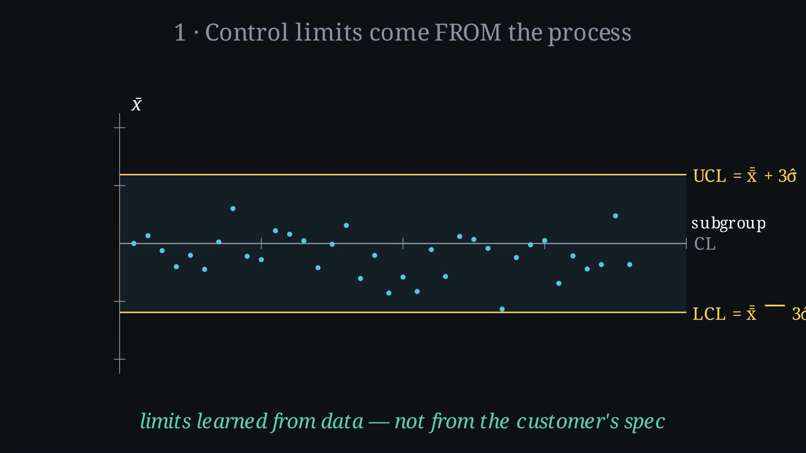
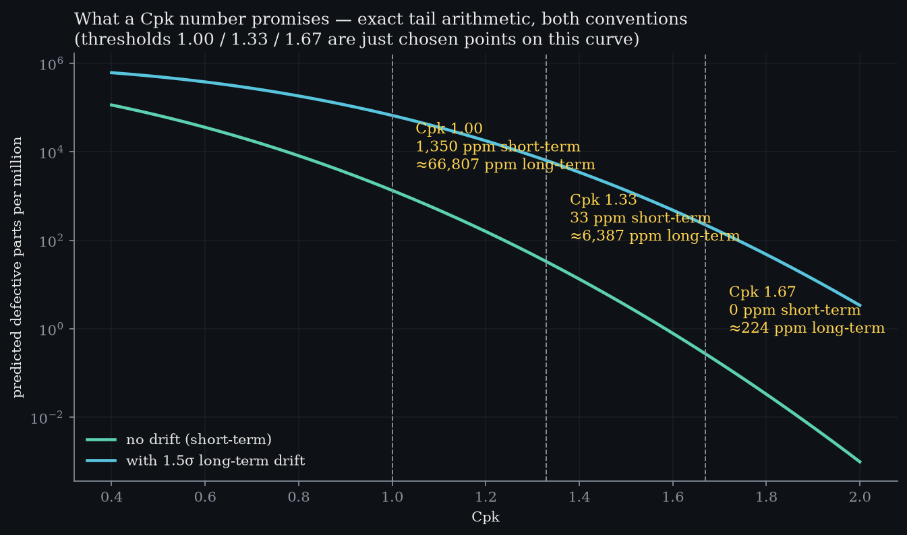

Level 8 · chapter eight
Capability is comparing two distributions
Specs are the customer's voice. Spread is the process's. Cpk prices their mismatch in defects.
after Level 7 — evidence and decisions, not yet written·leads to Level 9 — detection
- 8.1Two distributions on one axisthe customer speaks in limits, the process in spread
- 8.2Cp is pure geometrytolerance over six sigma, and no probability in it
- 8.3The near side is the one you failthe mean drifts, the spread does not, the number collapses
- 8.4Every Cpk is a promise about defect rate1.33 against 1.67 is two orders of magnitude of scrap
Two distributions on one axis
Capability compares two distributions. the customer's voiceTwo lines on a drawing. They know nothing about your machine.One belongs to the customer and one belongs to the process, and the whole trick is that they are drawn on the same axis, in millimetres. The customer speaks in limits: anything between these two lines is accepted, and nothing outside them is.
The process answers with a spread. It never read the drawing, and at this width it does not fit.

Cp is pure geometry
Improve the process and watch the only number that matters here: the tolerance divided by six sigma. geometry onlyCpTOL / 6σat Cp 1.33spread = 75 % of TOLThat ratio is Cp, and it is pure geometry — no probability in it at all.
The nearer gap decides. Cp is pure geometry; Cpk is honest about where the mean actually sits.
At 1.33 the natural spread is three quarters of the tolerance, and there is room on both sides. Drag the slider and the ratio moves with the spread.
- Predicted defects
- —
- Odds of a bad part
- —
- Industry verdict
- —
Computed from the exact normal tail — the same integral tested in spc-lab's suite. No lookup tables.
The near side is the one you fail
Now let the mean drift and change nothing else. what the drift costsCpk0.80leak8 198 ppmin plain counting1 in 122The spread stays exactly where it was, but the number collapses, because Cpk keeps the smaller of the two one-sided ratios: the near limit is the one you fail first.
That leak is 8,198 parts per million, and at this scale you cannot see it. spoken · 1:36“8,198 parts per million is the same sentence as 1 in 122 parts.”So stretch the vertical axis until it is visible: the peak leaves the frame, and the tail is what we came for. The index itself is only the near gap, measured in three sigmas.
Every Cpk is a promise about defect rate
Parts per million up the side, on a logarithmic scale, because it spans five decades. the promiseCpk 1.001 350 ppmCpk 1.3333.04 ppmCpk 1.670.27 ppmWalk Cpk upward from 0.6 and read the promise off the curve. Every figure here is computed at render time by the same function the test suite checks — nothing is read off a table.
Which is why the difference between 1.33 and 1.67 is not a rounding argument. It is two orders of magnitude of scrap. A capability index is a defect rate wearing a friendlier number.

play
